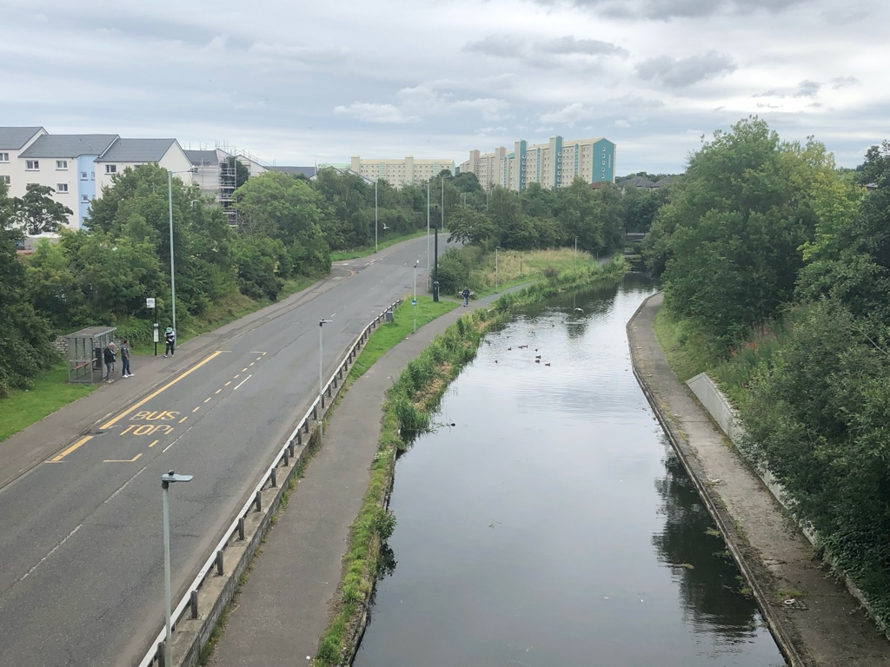

CASE 49 / 英国 / エディンバラ
Wester Hailes — The Westside Shed
ウェスター・ヘイルズ：ウェストサイド・シェッド
住民の地域計画を、小さな貸出拠点と日常の運営へつなぐ。
Wester Hailes Community Trustが地域計画を背景に設けたコミュニティ拠点。交通端末を並べた大規模施設ではなく、自転車・工具の貸出と地域活動を接続する小さな場所である。会員がアイデアと投票を通じて組織を方向づける点を、単なる利用者アンケートとは分けて学べる。
都市・地域の実証 · 調査確認日 2026.09.28

周辺地区
PHOTO: Richard Webb / Union Canal, Wester Hailes / Geograph · 掲載元 ↗ · CC BY-SA 2.0 ↗写真の詳細
対象地区Wester HailesのUnion Canal沿い（2023年8月）。拠点設備そのものは写っていません。2024年設置のWestside Shed以前の地区風景であり、拠点の整備成果や利用状況を示す写真ではありません。
Union Canal, Wester Hailes · 2023-08-09 · 配信元の画像を使用。表示サイズのみ調整し、切り抜き・色変更なし。
- LOCATION / 所在地
- 英国・エディンバラ
Westside Plaza周辺の代表点。将来構想のCanalside Hubと区別。 - ESTABLISHED / 設立・開始
- WHCTは2015年設立、2016年慈善法人登録。Westside Shedは2024年設置。
- OPERATOR / 運営
- Wester Hailes Community Trustが拠点と自転車貸出を運営。工具貸出はEdinburgh Tool Libraryが提供する。
- ROLE / 主な工程
- 課題を捉える / 仲間をつくる / 現物をつくる / 事業にする
AT A GLANCE
この事例の要点。
概要をつかんでから、知りたい項目へ。
何をする場・制度？
Wester Hailes Community Trustが地域計画を背景に設けたコミュニティ拠点。
運営の仕組みを読む ↓- 対象単位
- 地域団体が運営する共有資源拠点
- 状況
- 継続運用2024年設置のShedと現在のサービス案内を確認。別のCanalside取得構想は稼働扱いしない。 · 2026-09-28
稼働中のWestside Shedを比較単位とし、Trust全体の事業やCanalside構想を混ぜない。
どちらの入口でも、本文と根拠は同じです。最初に読むポイントだけを切り替えます。
II / VALUE CREATION FUNCTIONS
資源を、どう価値へ変えるか。
以下は既存の8ステップへの編集上の対応づけです。各施設の公式な工程名や、全工程を自前で担うことを意味しません。
地域の決定を持つ
Trustは地域会員と理事によって運営され、会員がアイデアを共有し実施案へ投票すると説明する。地域計画から活動へ進む意思決定の入口があるが、全住民の代表性は別の確認事項である。
小さく現地に置く
2024年にWestside Plazaへコンテナを設置し、Shedとして自転車・工具の貸出や地域活動の拠点にした。地域計画を常設の窓口へつないだ実施であり、別のCanalside取得構想とは区別する。
専門資源をつなぐ
無料自転車はTrustが直接管理し、工具はEdinburgh Tool Libraryの会員制度を通じて利用する。地域の受取場所と専門サービスを接続する役割分担であり、全機能が一律無料という意味ではない。
III / OUTPUT
直接、何が生まれたか。
試作品、データ、契約、標準、育成した人材など、活動から直接生まれたもの。
地域計画を背景とするShed、自転車貸出、工具受取、ワークショップ等への入口。
提供物が存在することと、必要な人が実際に利用できることを区別する。入口の案内、利用条件、サービスの連携を一つの運営仕様として点検できる点が比較上の成果物である。
IV / OUTCOME
その結果、何が変わったか。
実際の利用、行動、業務、事業、地域の変化。報告された変化と、施設の活動に帰属できる効果は区別します。
運営者は費用障壁を下げることと低炭素な生活を目的として説明する。地域全体の自動車利用や孤立の低減量は今回の資料からは確定できない。
長期の生活改善と施設整備の因果関係は未確認。利用者に選ばれているという観察だけでは、地域全体の公平性や、利用できない人への影響までは説明できない。
公開資料では未確認
PROJECT IN FOCUS / 具体的な事例
Wester Hailes — The Westside Shed
確認できた段階：導入 調査確認日 2026-09-28
誰の課題を、どう扱ったか
地域住民の優先事項を計画にまとめ、共有資源を貸す日常の場所に変える連鎖。小さな拠点でも、会員制の意思決定と貸出サービスの運営を結ぶことで、参加の入口と実装先を同時に持てる。
生まれたもの
地域計画を背景とするShed、自転車貸出、工具受取、ワークショップ等への入口。
確認できた変化
運営者は費用障壁を下げることと低炭素な生活を目的として説明する。地域全体の自動車利用や孤立の低減量は今回の資料からは確定できない。
評価の限界：Canalside Community Hub構想とは別事業。Shedの通年開館状況、利用件数、維持費、交通転換・不平等縮小の定量効果は未確認。
DESIGN BACKWARDS FROM IMPLEMENTATION
社会実装から逆算して、
何を先に整えているか。
実証の先にある導入・運用・継続から、この事例の設計を読み解きます。原典で確認できる仕組みと、MDLの設計解釈・他地域へ応用するための提案を区別して読んでください。「提案」「未実施」と記す内容は、当地で実施済みの工夫ではありません。仕組みの存在と、全案件で成果が出たことも別に扱います。
01実装上の工夫：地域計画を異なる貸出主体へつなぐ
Local Place Planを背景にWestside Shedを設け、Trustが無料の自転車貸出を直接管理。一方で工具はEdinburgh Tool Libraryの制度を使い、拠点で受け取れるようにする。地域の窓口と専門サービスを役割分担している。
移転時の設計提案：引き受ける運営者を先に定める
受付、整備、保険、保管を誰が担うかを定める。共同体という言葉で無償労働を当然視せず、継続できる仕事量と財源を設計する。
移転時の設計提案：効果と費用を同じ単位で追う
計画に書いた優先事項が実際の利用へ変わったかを定期的に会員へ返す。故障が多い資産や利用条件の障壁を見直す、小さな改善の周期を置く。
MORE DETAIL / 運営・根拠・応用
運営の全体像と、学びを深める資料。
費用負担、公表値、応用条件、写真・動画、原典を続けて確認できます。
01どう動かしているのか。
住民がつくったLocal Place Planを具体化する拠点としてコンテナを設置。無料のBike Libraryと、会員登録を伴うTool Libraryの受取を組み合わせ、地域活動を行う。二つの貸出制度を一律無料とみなさず、利用条件と運営主体を区別する。
- 地域計画：住民と地域団体が優先事項を決める。
- 小規模導入：広場入口のコンテナを日常窓口にする。
- 分担運営：WHCTの自転車と専門団体の工具貸出を接続。
02誰が負担し、誰が担うか。
地方計画の策定にはCity of Edinburgh Councilの資金支援歴を確認できる。Shedの日常運営費・人件費・貸出資産の更新費の現行負担内訳は未確認。
制度やプログラムの財源と、各参加企業・地域に発生する費用は同じではありません。公開範囲を超える案件別予算・契約条件は未確認です。
03確認できたこと。
確認した事実 2026-09-28WHCTの公式履歴は2024年のWestside Shed設置を記録。
読み取れる範囲：Canalside Community Hub構想とは別事業。Shedの通年開館状況、利用件数、維持費、交通転換・不平等縮小の定量効果は未確認。
原典で確かめる ↗ 出典の説明 ↓ 運営者の報告 2026-09-28Shed公式ページは無料自転車貸出と工具ライブラリーを案内。
読み取れる範囲：Canalside Community Hub構想とは別事業。Shedの通年開館状況、利用件数、維持費、交通転換・不平等縮小の定量効果は未確認。
原典で確かめる ↗ 出典の説明 ↓ 運営者の報告 2026-09-28政府の地域生活ガイダンスはWester Hailesの地域計画を事例として扱う。
読み取れる範囲：Canalside Community Hub構想とは別事業。Shedの通年開館状況、利用件数、維持費、交通転換・不平等縮小の定量効果は未確認。
原典で確かめる ↗ 出典の説明 ↓ MDL ANALYSIS04日本で活かすなら。
大きな施設整備を先行させず、住民の計画を日々のサービスへ翻訳する運営主体を育てる。貸出・修理・保管の仕事を資金と共に設計する。
05そのまま真似できないこと。
Canalside Community Hub構想とは別事業。Shedの通年開館状況、利用件数、維持費、交通転換・不平等縮小の定量効果は未確認。
PROPOSAL / 未実施の検証案06次に、何を確かめるか。
貸出できなかった理由、故障・整備時間、利用者の節約額を記録。会員でない住民のニーズが意思決定に入るかも確認する。
08原典を読む。
制度の説明と運営者による実績報告を区別しています。日付記載のない資料は、公表時点を確定できません。確認日は資料を確認した日であり、活動や成果が発生した日ではありません。
wester-hailes-westside-shed-s1About WHCT ↗
設置年、会員投票、計画資金
Wester Hailes Community Trust · 公表：日付記載なし
確認箇所：History / How We’re Run · 確認日：2026-09-28
wester-hailes-westside-shed-s2The Westside Shed ↗
直接運営と工具団体の分担
Wester Hailes Community Trust · 公表：日付記載なし
確認箇所：Bike Library / Tool Library · 確認日：2026-09-28
FROM THIS CASE TO YOUR PROJECT
読んだ事例を、自分の計画へ。